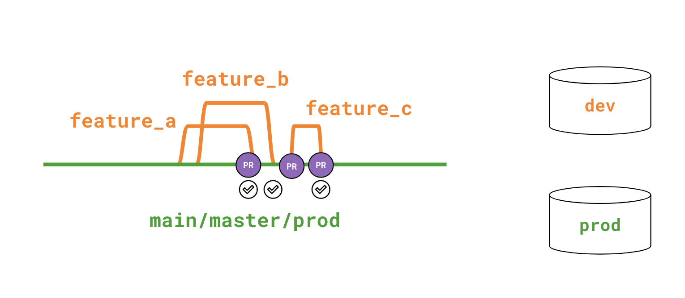

You’ve built a complete dbt project: sources, models, tests, snapshots, macros, packages, exposures. You can dbt build it locally and watch it succeed. The question Stage 7 answers is: how do other people run this code, in production, without you sitting there pressing keys?
That’s deployment. It has two parts: (1) how does the code get from your laptop to a server? and (2) how does the server know which version to run, and against which warehouse?
When dbt code lives in a Git repo and gets shipped via a CI pipeline, two patterns dominate.
feature-branch → PR → CI builds in temp schema → review → merge to main → prod build
The lifecycle:
main, makes changes.dbt build against a temporary PR schema (e.g. dbt_pr_142).main. A scheduled or merge-triggered job rebuilds the prod schema.This is what 90% of teams use. It’s fast, it’s simple, every change touches prod within hours of merging.
feature-branch → PR → CI temp schema → review → merge to qa → batch QA → merge qa to main → prod build
The lifecycle:
qa branch off main.qa, open PRs into qa.qa — that triggers a build of the qa schema.qa schema. Stakeholders kick the tires.qa into main and rebuild prod.This pattern adds latency but gives you a real staging environment. Use it when stakeholders need to UAT changes before they hit prod, or when releases are batched (e.g. you ship every Tuesday).
| Concern | 1-trunk | 2-trunk |
|---|---|---|
| Time-to-prod | Hours | Days to weeks |
| UAT environment | Per-PR temp schema | Persistent QA schema |
| Code owner overhead | Low | Higher (manages qa→main merges) |
| Default for new teams | ✅ | When you outgrow 1-trunk |
Most companies start with 1-trunk and only adopt 2-trunk when stakeholder UAT becomes a recurring blocker.
--targetA target is a named output configuration in profiles.yml. Each target points dbt at a different warehouse / schema / set of credentials.
The minimal profiles.yml you’ve used so far has one target — dev — pointing at a local DuckDB file:
dbt_project:
target: dev # default target if none specified
outputs:
dev:
type: duckdb
path: ../database/dev.duckdb
In production, the same project file declares multiple targets:
dbt_project:
target: dev
outputs:
dev:
type: snowflake
account: my_co.snowflakecomputing.com
database: ANALYTICS_DEV
schema: dbt_alice
threads: 4
prod:
type: snowflake
account: my_co.snowflakecomputing.com
database: ANALYTICS_PROD
schema: analytics
threads: 16
Same code, two destinations. The CI server runs dbt build --target prod; you run dbt build locally (which defaults to dev).
--target flagdbt build # uses outputs.target (the default — usually dev)
dbt build --target prod # uses outputs.prod
dbt build --target qa # uses outputs.qa
Three patterns are common:
dbt_alice, dbt_bob) so nobody’s local builds clobber each other.dev / qa / prod, each pointing at a different schema (or warehouse).dbt_pr_142) so reviewers can query the rebuild.database — points at a different warehouse database (e.g. ANALYTICS_DEV vs ANALYTICS_PROD).schema — different schema (e.g. dbt_alice vs analytics).threads — dev usually runs with 4 threads, prod often runs with 16+ for speed.vars — sometimes per-target vars (e.g. is_prod: true) toggle behavior in models.In DuckDB land — which is what this course uses — the only thing that meaningfully differs is the file path. That’s still enough to demonstrate the mechanic of multi-target builds, which is what Stage 7’s first exercise does.
Stage 5 introduced state selection: dbt build --select state:modified+ --state ../state_initial. That command says “build only the things that changed since this prior state, plus their downstream dependencies.”
State selection is the single most important production speedup. A typical CI pipeline does:
dbt build --select state:modified+ --state ./prod_artifacts.This turns a 30-minute “build everything” CI job into a 30-second “build the diff” job. Real CI pipelines maintain a prod_artifacts/ directory — the manifest from the last successful prod run — and use it as the comparison baseline for every PR.
Two ways to run dbt in production:
| dbt Cloud | Self-hosted (GitHub Actions, Airflow, Dagster) | |
|---|---|---|
| Setup | ~30 min UI | A few hours of YAML |
| Cost | Per developer seat | Free + your CI minutes |
| Job scheduling | Built-in cron + UI | Whatever your runner does |
| State selection | First-class | You wire it manually with artifact upload/download |
| dbt CI on PRs | Built-in | You write a workflow |
| Doc hosting | Built-in (auto-publishes docs site) | You publish the static target/ files yourself |
| Lock-in | Yes (Cloud-only features) | No |
dbt Cloud is the path-of-least-resistance for teams that don’t have strong ops practices. Self-hosted (typically GitHub Actions calling dbt build directly) is what teams with ops chops choose. Both are valid; the choice is mostly about how much of your team’s time you want to spend writing CI YAML.
You’ve already learned the dbt code that runs in production. Stage 7 covers the mechanics around it:
multi_target_profile — concretely add a prod: target to profiles.yml and run dbt build --target prod. Even though both targets are local DuckDB files, the YAML mechanic is identical to what you’d configure for Snowflake/BigQuery.analysis_to_model — promotes one of the analyses you wrote in Stage 3 to a real, tested mart. This is the “code review” step in real life: when an analysis gets queried often enough, it graduates to a model, gets a description and a test, and joins the production graph.The remaining Stage 7 items (tooling_landscape, course_complete) are concept lessons.
dev schema names in models. If a model has from analytics_dev.raw_orders, it will fail in prod. The fix: use sources ({{ source('jaffle_shop', 'raw_orders') }}) and let the source YAML control the database/schema per-target.--target prod if you only ever test --target dev. CI should run against a target that matches prod’s adapter, even if the schema is different.dbt build --target prod is enough for most teams. If you can call dbt from a shell, you can deploy it.Press n to start the multi-target profile exercise.